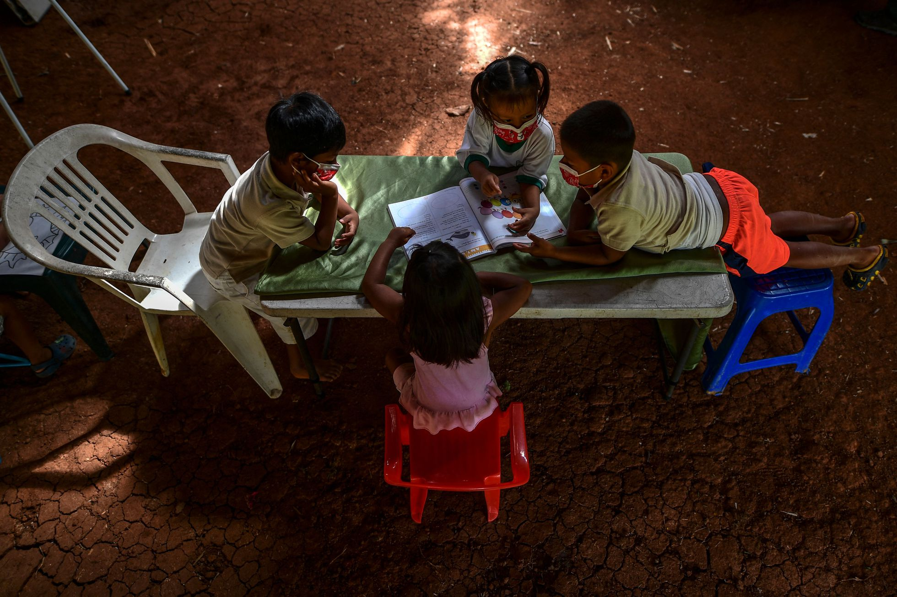

La escasez de vacunas y la falta de infraestructura lastran el regreso a clases en América Latina
La región que registra más días sin clases en el mundo regresa poco a poco a la normalidad, pero con grandes diferencias entre países
Escuelas sin agua, aulas mal ventiladas o muy pequeñas para garantizar la distancia social que exige la pandemia; maestros agotados y mal pagados; falta de vacunas y sistemas de salud deficientes; grandes extensiones selváticas o montañosas sin acceso a internet. La lista de desafíos que enfrenta el regreso a clases en América Latina es enorme. En su informe regional de abril, Unicef, la oficina de la ONU para la infancia, decía que al 31 de marzo solo ocho países tenían sus escuelas totalmente abiertas (Costa Rica, Nicaragua y seis islas del caribe), 10 países las tenían cerradas (entre ellos México, Venezuela y Perú) y otros 18 países las mantenían parcialmente abiertas (Argentina, Chile, Colombia, Bolivia, Paraguay y Ecuador, entre otros).
“Tres de cada cinco niños y niñas que perdieron un año escolar en el mundo durante la pandemia viven en América Latina y el Caribe”, advertía Unicef. Cinco meses después, la región intenta revertir esa realidad, aunque con grandes diferencias entre países.
Demoras en la región andina
Venezuela es el país que más tiempo ha mantenido sus escuelas cerradas y el que más ha demorado la reapertura, en una región en la que también se puede incluir a Colombia, Ecuador y Perú. El gobierno de Nicolás Maduro cerró las aulas el 13 de marzo de 2020 y a poco más de un mes del inicio de un nuevo ciclo hay siete millones de alumnos en el limbo. El presidente ha ordenado el regreso a las clases presenciales a partir de octubre, una promesa que ha chocado con una dura realidad sanitaria: solo el 4% de la población ha recibido la vacuna completa contra la covid-19. Se suma, además, la falta de maestros.
